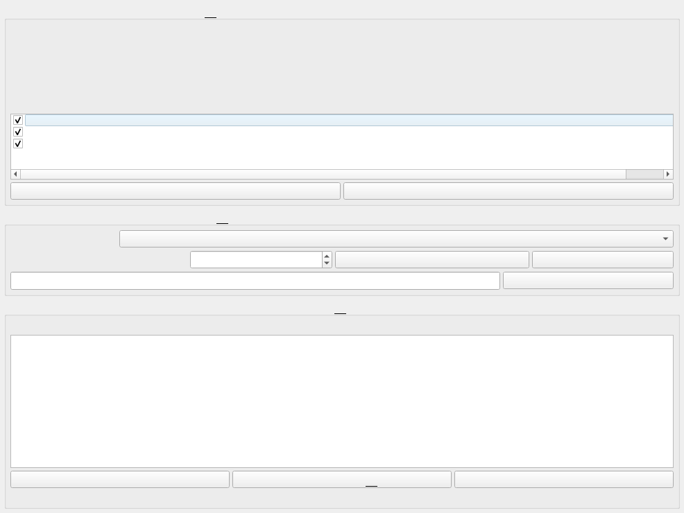

1. Algorithmic & Protocol Methodology
1.1 Sub-150 Token Compact Context Protocol & SHA-256 Delta Digest (compact_context.py)
Conventional GIS AI plugins serialize verbose JSON schemas and raw GeoJSON geometry coordinates on every turn, consuming $1,800\text{–}4,500$ tokens per request. CompactContextBuilder compresses each user-approved layer $L \in \mathcal{L}_{\text{opt-in}}$ into a deterministic micro-DSL record and computes a 64-bit truncated SHA-256 state digest $H_t$:
When $H_t = H_{t-1}$ on subsequent turns ($t \ge 2$), build_delta_context(H_{t-1}) transmits only a 18-token delta heartbeat:
{"v": 1, "delta": "UNCHANGED", "hash": "a94f82c1d0e8b712", "p_crs": "EPSG:5253", "crs_ok": true}
1.2 Three-Tier AST Static Security Sandbox & Ephemeral Loopback Auth (security_guard.py)
Before any AI-generated PyQGIS snippet or tool call is executed, SecurityGuard parses the code into an Abstract Syntax Tree (ast.parse) and traverses every node via AstSecurityVisitor(ast.NodeVisitor):
RiskLevel.BLOCKED: Immediately rejects imports or calls involvingsubprocess,shutil,socket,urllib,requests,ctypes,pickle,eval(),exec(),compile(),__import__(),os.system(), or sandbox-escape dunders (__subclasses__,__globals__,__builtins__,__code__).RiskLevel.WORKSPACE_MUTATION: Flags calls toprocessing.run,startEditing,deleteFeatures,addMapLayer,setCrs, orQgsVectorFileWriter, routing them to the Human-in-the-Loop Action Review pane for explicit user approval.RiskLevel.READ_ONLY: Permits bounded metadata, CRS, and expression queries to execute safely on the main Qt thread.
For external MCP clients (Antigravity, Claude Code, Cursor, OpenCode, Codex), the TCP bridge binds strictly to 127.0.0.1 and authenticates every JSON-RPC 2.0 request against a 128-bit session token (secrets.token_hex(16)) using constant-time hmac.compare_digest.
1.3 First-Class EPSG:5253 (TUREF / TM30) Governance & Native .model3 Compiler (model3_exporter.py)
The dock continuously audits whether QgsProject.instance().crs().authid() and all opted-in layers match the standard projected CRS EPSG:5253, offering 1-click deterministic reprojection via native:reprojectlayer. Approved processing action chains can be compiled with 1 click into native QGIS Graphic Modeler XML files (.model3) or standalone reproducible PyQGIS scripts (.py)—completely avoiding heavy custom visual node-canvas bloat.
2. Clean-Room Comparative Synthesis Matrix
| Architectural Dimension | Legacy MCP / Copilot Plugins | qgis_lite_agent (Clean-Room Architecture) |
|---|---|---|
| Prompt & Schema Token Cost | 1,800–4,500 tokens/turn (100+ granular tool schemas + full JSON layer dumps) | < 150 tokens initial turn; ~18 tokens on delta turns (6 multiplexed tools + SHA-256 state hash) |
| Layer Privacy Governance | Entire QGIS project exposed to LLM by default | Explicit per-layer opt-in checkboxes; zero raw WKT/GeoJSON geometry dumping |
| Execution Security | Unguarded exec() on loopback socket |
3-Tier AST Static Analyzer + 128-bit Loopback Session Token + Human-in-the-Loop Approval |
| Workflow Reproducibility | Ephemeral chat history or bloated custom node canvas | 1-Click compilation to native QGIS .model3 XML & standalone .py script (zero canvas bloat) |
| CRS & Geodetic Standard | Unchecked geographic/projected mixing | Built-in EPSG:5253 (TUREF / TM30) compliance badge & 1-click reprojection |
3. Step-by-Step GUI Workflow (Real PyQGIS Captures)

127.0.0.1), selecting opt-in layers, and verifying the EPSG:5253 CRS status badge and live token counter.

.model3 Export: Reviewing an AI-proposed processing.run chain classified as WORKSPACE_MUTATION by SecurityGuard, approving execution, and exporting the workflow to a native QGIS .model3 file.
4. Verified Academic & Algorithmic Foundations
| Citation | Title & Journal | Verified DOI | Relevance to Spatial Processing Workflows |
|---|---|---|---|
| Dijkstra, E. W. (1959) | A note on two problems in connexion with graphs, Numerische Mathematik, 1(1), 269–271. | 10.1007/BF01386390 | Foundation of native:shortestpathpointtopoint and network accessibility chains exported to .model3 |
| Luo, W. & Wang, F. (2003) | Measures of Spatial Accessibility to Health Care in a GIS Environment: Synthesis and a Case Study in the Chicago Region, Environment and Planning B, 30(6), 865–884. | 10.1068/b29120 | Spatial buffer & catchment join workflows automated via qgis_lite_agent processing chains |